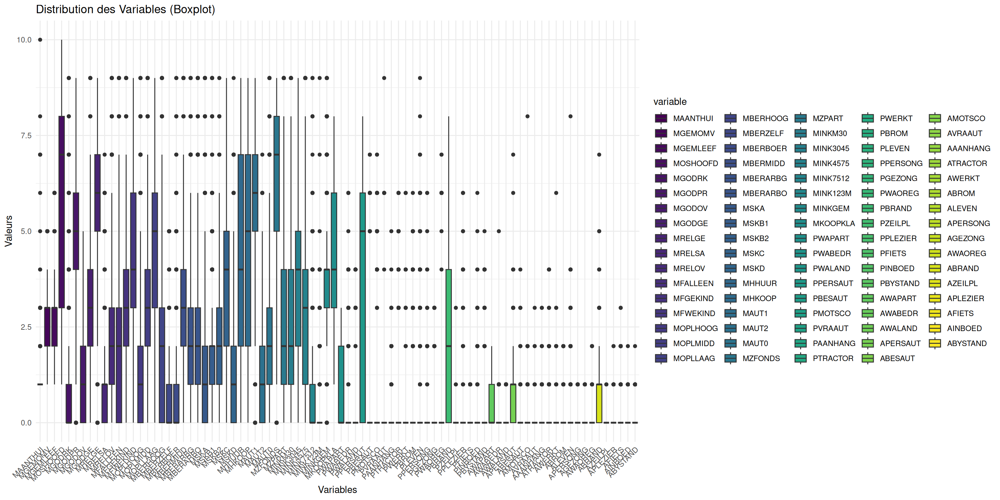
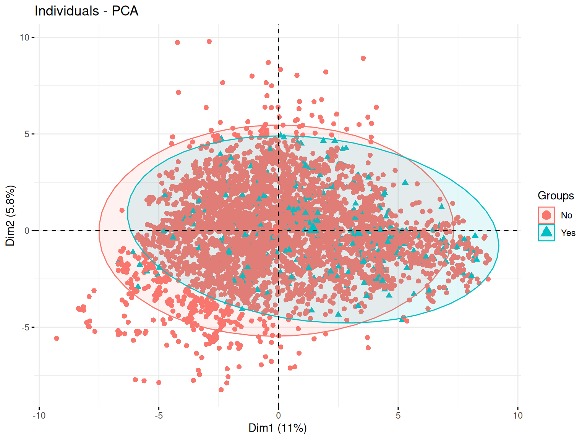

Code
# Données
library(ISLR) # Caravan data
library(dplyr) # manipulation des données
library(car) # pour VIF
# Plots
## ggplot
library(ggplot2)
library(gridExtra)# Données
library(ISLR) # Caravan data
library(dplyr) # manipulation des données
library(car) # pour VIF
# Plots
## ggplot
library(ggplot2)
library(gridExtra)my_boxplot <- function(data) {
# Transformer les données en format long pour ggplot
data_long <- reshape2::melt(data)
ggplot(data_long, aes(x = variable, y = value, fill = variable)) +
geom_boxplot() +
scale_fill_viridis_d() + # Palette de couleurs harmonieuse
labs(title = "Distribution des Variables (Boxplot)", x = "Variables", y = "Valeurs") +
theme_minimal() + # Thème épuré
theme(axis.text.x = element_text(angle = 45, hjust = 1)) # Rotation des étiquettes
}my_VIFplot <- function(vif) {
vif_df <- data.frame(Variable = names(vif), VIF = vif)
p <- ggplot(vif_df, aes(
x = reorder(Variable, VIF),
y = pmin(VIF, 15),
fill = VIF > 10
)) +
geom_bar(stat = "identity") +
geom_text(aes(label = ifelse(VIF > 10, round(VIF, 1), "")), hjust = -0.2, size = 6) +
coord_flip() +
scale_fill_manual(values = c("FALSE" = "#0072B2", "TRUE" = "#D55E00")) +
labs(title = "Variance Inflation Factor (VIF)", x = "Variables", y = "VIF (limité à 15)") +
theme_minimal() +
theme(
axis.title = element_text(size = 34, face = "bold"),
plot.title = element_text(
size = 54,
face = "bold",
hjust = 0.5
),
axis.text.x = element_text(size = 26),
axis.text.y = element_text(size = 18),
legend.text = element_text(size = 30),
legend.title = element_text(size = 38, face = "bold")
)
return(p)
}On considère le jeu de données Caravan de la librairie ISLR de R. Ce jeu de données contient, pour 5822 clients d’une assurance, 86 variables décrivant leur profil.
Dans ces 86 variables, les variables 1 à 43 contiennent des données sociodémographiques et les variables 44 à 86 la propriété du produit.
A savoir que les données sociodémographiques sont dérivées des codes postaux. Tous les clients vivant dans des zones ayant le même code postal ont les mêmes attributs sociodémographiques.
Puis, la dernière variable Purchase indique si le client a souscrit une assurance pour caravane ou non. Cela veut donc dire que nos variables sont pour beaucoup qualitative (nominales ou ordinales).
Les détails sur l’information représentée par nos différentes variables se trouvent sur cette page. Le détail ne sera donc pas afficher ici car un peu trop long mais je vous invite à jeter un oeil pour mieux comprendre les données.
Aussi, à la vu des dimensions, on se passera d’afficher le summary(). Mais n’oublions pas de vérifier s’il y a des valeurs manquantes.
cat("Y-at-il des valeurs manquantes : ", anyNA(Caravan))Y-at-il des valeurs manquantes : FALSEPour nos analyses, on s’intéressera à la variable Purchase. Celle ci pouvans déjà nous indiquer que le pourcentage de clients ayant souscrit à une assurance caravane est de 5.98%
On peut regarder un peu la distribution de nos différents variables quantitatives via des boxplots.
my_boxplot(Caravan)
Résultats
On voit que pour nos variables, nous sommes sur des valeurs généralement comprises entre 0 et 10 sauf pour la vairiable MOSTYPE représentant ??? qui a des valuers beaucoup plus importante.
Ainsi, ssi l’on veut mieux voir la distribution de nos variables, on peut enlever MOSTYPE.
my_boxplot(Caravan[,-1])
Lorsque nos données sont de grandes dimension, des correlation panel deviennent difficile à produire et à lire. On peut donc tenter de passer sur une représentation commune qui est la heatmap. Ici, on fera la heatmap pour nos variable sociodémographiques, pour nos variables de propriété du produit et sur toutes les vaiables.
data_subset <- Caravan[,1:43]
data_long <- reshape2::melt(as.matrix(data_subset))
ggplot(data_long, aes(x = Var2, y = Var1, fill = value)) +
geom_tile() +
scale_fill_gradient(low = "white", high = "blue") +
labs(title = "Heatmap des 43 premières variables de Caravan",
x = "Variables",
y = "Observations") +
theme_minimal() +
theme(axis.text.x = element_text(angle = 90, hjust = 1))Résultats
Résultats
Résultats
Avec une Analyse en Composantes Principales (PCA) on peut regarder un peu le comportement de nos données.
En effet, Cette méthode respose sur la transformation des variables d’origine en nouvelles variables non corrélées, appelées composantes principales, qui capturent successivement la plus grande variance possible des données.
res_pca <- FactoMineR::PCA(Caravan,
quali.sup = c(which(colnames(Caravan) %in% c("Purchase"))),
graph = FALSE)Ici, on spécifi notre variable qualitative en variable supplémentaire, ce qui veut dire qu’elles ne seront pas considérés pour la formation de nos composantes principales (variable que l’on cherchera à estimer plus tard).
Tout d’abord, on peut commencer par regarder le pourcentage de variance expliqué par nos différentes composantes principales.
factoextra::fviz_eig(
res_pca,
ncp = 15,
addlabels = TRUE,
barfill = "coral",
barcolor = "coral",
ylim = c(0, 15),
main = "Percentage of variance of the 15 first components"
)
Résultats
On voit ainsi que la variance expliqué par nos deux premiers axes est d’environ 16%. Ce qui est une situation que l’on peut facilement retrouver dans des cas de grandes dimensions avec beaucoup de variables.
Le plan des individus est une projection des observations sur les axes principaux de la PCA. Cette visualisation permet d’identifier des regroupements, tendances et anomalies au sein des données.
Ainsi, des individus proches sur le graphique ont des caractéristiques similaires par rapport aux variables utilisées.
Puis, le placement d’un individu en fonction des axes peut permettre de savoir comment le jouer se caractérise par rapport aux variables qui contribuent le plus à ces axes.
factoextra::fviz_pca_ind(
res_pca,
label = "none",
pointsize = 2,
habillage = as.factor(Caravan$Purchase),
addEllipses = TRUE,
ellipse.level = 0.95
)
Résultats
Ici on voit une repartition plutot uniforme sur le plan qui ne semble pas permettre de distinguer une séparation forte correspodant à notre variable qualitative.
Le cercle des variables est une représentation graphique qui permet d’analyser les relations entre les variables initiales et les composantes principales qui forment nos axes. Il est basé sur les corrélations entre les variables et les axes principaux.
Ainsi, plus une variable est proche du bord du cercle, plus elle est bien représentée sur le plan factoriel et contribue fortement à la formation des axes. Ici, on utilise le cos2 pour le gradient de couleur qui va aider à l’indentifictation de ces différentes qualitées de représentation.
De plus, selon l’angle entre deux varibles, on peut faire des suppositions sur leur corrélation :
Si deux variables ont des vecteurs proches (petit angle), elles sont fortement corrélées positivement
Si deux variables ont des vecteurs opposés (angle proche de 180°), elles sont corrélées négativement
Si l’angle est proche de 90°, alors les variables ne sont pas corrélées
factoextra::fviz_pca_var(
res_pca,
col.var = "cos2",
gradient.cols = rainbow(n = 8, start = .6, end = .9),
repel = TRUE
)Résultats
Ici aussi, du fait du grand nombre de variable il est difficile de dicerner quelque chose de pertinent.
Maintenant, certaines variables sont tout de même bien représenter sur nos premiers axes et sont assez proche, ce qui témoigne d’une corrélation entre elles.
Ajustons un modèle de régression logistique modélisant la probabilité de souscrire une assurance caravane en fonction de toutes les autres variables à disposition
mod1 <- glm(Caravan$Purchase~.,
family = binomial,
Caravan)Warning: glm.fit: des probabilités ont été ajustées numériquement à 0 ou 1mod1 %>% summary()
Call:
glm(formula = Caravan$Purchase ~ ., family = binomial, data = Caravan)
Coefficients:
Estimate Std. Error z value Pr(>|z|)
(Intercept) 2.542e+02 1.116e+04 0.023 0.98183
MOSTYPE 6.580e-02 4.624e-02 1.423 0.15468
MAANTHUI -1.832e-01 1.927e-01 -0.951 0.34157
MGEMOMV -2.696e-02 1.399e-01 -0.193 0.84723
MGEMLEEF 2.096e-01 1.016e-01 2.063 0.03911 *
MOSHOOFD -2.767e-01 2.076e-01 -1.333 0.18247
MGODRK -1.142e-01 1.069e-01 -1.068 0.28535
MGODPR -1.910e-02 1.177e-01 -0.162 0.87112
MGODOV -1.618e-02 1.055e-01 -0.153 0.87818
MGODGE -6.817e-02 1.113e-01 -0.612 0.54024
MRELGE 2.310e-01 1.566e-01 1.475 0.14031
MRELSA 8.509e-02 1.466e-01 0.580 0.56169
MRELOV 1.467e-01 1.562e-01 0.939 0.34759
MFALLEEN -8.291e-02 1.311e-01 -0.633 0.52702
MFGEKIND -1.154e-01 1.337e-01 -0.863 0.38813
MFWEKIND -8.140e-02 1.417e-01 -0.575 0.56561
MOPLHOOG 9.717e-04 1.311e-01 0.007 0.99408
MOPLMIDD -9.077e-02 1.365e-01 -0.665 0.50605
MOPLLAAG -1.994e-01 1.376e-01 -1.449 0.14740
MBERHOOG 8.883e-02 9.349e-02 0.950 0.34204
MBERZELF 3.918e-02 9.897e-02 0.396 0.69219
MBERBOER -1.169e-01 1.104e-01 -1.059 0.28951
MBERMIDD 1.353e-01 9.191e-02 1.472 0.14106
MBERARBG 3.976e-02 9.067e-02 0.438 0.66104
MBERARBO 9.954e-02 9.143e-02 1.089 0.27628
MSKA 2.690e-02 1.035e-01 0.260 0.79502
MSKB1 -8.801e-03 1.011e-01 -0.087 0.93064
MSKB2 1.200e-02 9.081e-02 0.132 0.89485
MSKC 9.016e-02 9.958e-02 0.905 0.36527
MSKD -2.468e-02 9.724e-02 -0.254 0.79967
MHHUUR -1.472e+01 8.140e+02 -0.018 0.98557
MHKOOP -1.469e+01 8.140e+02 -0.018 0.98561
MAUT1 1.819e-01 1.514e-01 1.202 0.22953
MAUT2 1.507e-01 1.371e-01 1.099 0.27162
MAUT0 9.325e-02 1.436e-01 0.649 0.51603
MZFONDS -1.445e+01 9.359e+02 -0.015 0.98768
MZPART -1.451e+01 9.359e+02 -0.016 0.98763
MINKM30 1.181e-01 1.006e-01 1.174 0.24039
MINK3045 1.366e-01 9.650e-02 1.415 0.15694
MINK4575 1.009e-01 9.667e-02 1.043 0.29678
MINK7512 1.144e-01 1.027e-01 1.114 0.26513
MINK123M -1.607e-01 1.449e-01 -1.109 0.26738
MINKGEM 9.214e-02 9.945e-02 0.927 0.35417
MKOOPKLA 6.856e-02 4.642e-02 1.477 0.13966
PWAPART 5.954e-01 3.901e-01 1.526 0.12693
PWABEDR -2.757e-01 4.635e-01 -0.595 0.55196
PWALAND -4.405e-01 1.035e+00 -0.425 0.67052
PPERSAUT 2.306e-01 4.199e-02 5.491 4.01e-08 ***
PBESAUT 1.215e+01 4.029e+02 0.030 0.97595
PMOTSCO -8.101e-02 1.147e-01 -0.706 0.48006
PVRAAUT -2.106e+00 2.557e+03 -0.001 0.99934
PAANHANG 1.014e+00 9.371e-01 1.082 0.27917
PTRACTOR 7.229e-01 4.278e-01 1.690 0.09107 .
PWERKT -5.525e+00 4.805e+03 -0.001 0.99908
PBROM 2.170e-01 4.865e-01 0.446 0.65559
PLEVEN -2.382e-01 1.170e-01 -2.036 0.04173 *
PPERSONG -4.523e-01 2.094e+00 -0.216 0.82901
PGEZONG 1.444e+00 1.029e+00 1.404 0.16033
PWAOREG 8.239e-01 5.943e-01 1.386 0.16565
PBRAND 2.401e-01 7.714e-02 3.113 0.00185 **
PZEILPL -8.658e+00 3.261e+03 -0.003 0.99788
PPLEZIER -1.886e-01 3.259e-01 -0.579 0.56289
PFIETS 3.664e-01 8.325e-01 0.440 0.65985
PINBOED -1.068e+00 8.764e-01 -1.219 0.22301
PBYSTAND -1.676e-01 3.321e-01 -0.505 0.61373
AWAPART -9.293e-01 7.802e-01 -1.191 0.23364
AWABEDR 4.197e-01 1.082e+00 0.388 0.69824
AWALAND 2.762e-01 3.528e+00 0.078 0.93758
APERSAUT -3.902e-02 1.772e-01 -0.220 0.82566
ABESAUT -7.298e+01 2.417e+03 -0.030 0.97591
AMOTSCO 2.418e-01 3.772e-01 0.641 0.52142
AVRAAUT -4.490e+00 1.078e+04 0.000 0.99967
AAANHANG -1.351e+00 1.687e+00 -0.801 0.42322
ATRACTOR -2.376e+00 1.524e+00 -1.559 0.11899
AWERKT -8.749e-01 9.682e+03 0.000 0.99993
ABROM -1.060e+00 1.549e+00 -0.684 0.49367
ALEVEN 4.789e-01 2.245e-01 2.133 0.03291 *
APERSONG 3.997e-01 4.329e+00 0.092 0.92644
AGEZONG -3.163e+00 2.706e+00 -1.169 0.24247
AWAOREG -3.212e+00 3.433e+00 -0.936 0.34939
ABRAND -4.118e-01 2.787e-01 -1.477 0.13956
AZEILPL 1.047e+01 3.261e+03 0.003 0.99744
APLEZIER 2.516e+00 1.010e+00 2.490 0.01276 *
AFIETS 2.318e-01 5.699e-01 0.407 0.68420
AINBOED 1.947e+00 1.412e+00 1.378 0.16812
ABYSTAND 1.078e+00 1.103e+00 0.977 0.32870
---
Signif. codes: 0 '***' 0.001 '**' 0.01 '*' 0.05 '.' 0.1 ' ' 1
(Dispersion parameter for binomial family taken to be 1)
Null deviance: 2635.5 on 5821 degrees of freedom
Residual deviance: 2243.5 on 5736 degrees of freedom
AIC: 2415.5
Number of Fisher Scoring iterations: 17on a ici un modèle avec beaucoup de variable. Mais si on analyse le summary, on constate que seulement 6 varaibales sont significative.
Regardons un peu le VIF pour toutes les variables.
my_VIFplot(vif(mod1))
On constate la présence de beaucoup de variables avec un VIF très élevé et donc une forte colinéarité indiquant bien qu’il va falloir sélectionner les variables à garder dans notre modèle.
Après toute ces modélisations, rappelons nous tout de même l’objectif de l’assureur est de démarcher des clients de manière ciblée pour leurs faire souscrire une assurance caravane. On pourrait alors de demander : s’il démarchait les clients de façon aléatoire, sans tenir compte de leurs caractéristiques, quel serait environ son taux de réussite ?
Pour cela il suffit juste de ce rappeler du pourcentage donné précédemment qui nous disait la proportion de oui actuellement.
round(table(Caravan$Purchase)*100/nrow(Caravan), 3)
No Yes
94.023 5.977 Le pourcentage étant très bas, on va souhaiter utiliser l’un des 3 modèles estimés ci-dessus (le global, un de ceux sélectionnés par AIC et un de ceux sélectionnés par BIC) pour cibler les clients à démarcher.
Ainsi on regardera
Si l’on choisissait de démarcher tous les clients ayant une probabilité de souscrire l’assurance supérieure à 0.5, quel pourcentage de clients cela représenterait il pour chacun des 3 modèles estimés ? Quel seuil faudrait-il choisir à la place de 0.5 pour que ce pourcentage corresponde à environ 6% des clients ? On décide dans la suite de fixer ce seuil à 0.2 et on cherche à sélectionner le meilleur modèle parmi les 3 précédents.
sessioninfo::session_info(pkgs = "attached")─ Session info ───────────────────────────────────────────────────────────────
setting value
version R version 4.4.2 (2024-10-31)
os Ubuntu 24.04.1 LTS
system x86_64, linux-gnu
ui X11
language (EN)
collate fr_FR.UTF-8
ctype fr_FR.UTF-8
tz Europe/Paris
date 2025-02-20
pandoc 3.2 @ /usr/lib/rstudio/resources/app/bin/quarto/bin/tools/x86_64/ (via rmarkdown)
─ Packages ───────────────────────────────────────────────────────────────────
package * version date (UTC) lib source
car * 3.1-3 2024-09-27 [1] CRAN (R 4.4.2)
carData * 3.0-5 2022-01-06 [1] CRAN (R 4.4.2)
dplyr * 1.1.4 2023-11-17 [1] CRAN (R 4.4.2)
ggplot2 * 3.5.1 2024-04-23 [1] CRAN (R 4.4.2)
gridExtra * 2.3 2017-09-09 [1] CRAN (R 4.4.2)
ISLR * 1.4 2021-09-15 [1] CRAN (R 4.4.2)
[1] /home/clement/R/x86_64-pc-linux-gnu-library/4.4
[2] /usr/local/lib/R/site-library
[3] /usr/lib/R/site-library
[4] /usr/lib/R/library
──────────────────────────────────────────────────────────────────────────────car <- Caravan
# Question 3 --------------------------------------------------------------
mod_full = glm(car$Purchase~., family = binomial, car)
summary(mod_full)
library(car)
vif(mod_full) # quelques de vif elevé
## courbe ROC
library(pROC)
library(PresenceAbsence)
df_rocr_mod = matrix(0, nrow=nrow(as.matrix(car$Purchase)), ncol = 3)
df_rocr_mod[,1] = 1:nrow(as.matrix(car$Purchase))
df_rocr_mod[,2] = as.numeric(mod_full$y)
df_rocr_mod[,3] = mod_full$fitted
df_rocr_mod = as.data.frame(df_rocr_mod)
dimnames(df_rocr_mod)[[2]] = c('ID', "Observed", "Predicted")
dimnames(df_rocr_mod)[[2]]
# matrice de confusion
cmx(df_rocr_mod, threshold = 0.5)
# Calcul de la specificite et de la sensibilite
sensitivity(cmx(df_rocr_mod,threshold=0.5))
specificity(cmx(df_rocr_mod,threshold=0.5))
# Courbe ROC pour le modele logistique CHD
roc.plot.calculate(df_rocr_mod)
auc.roc.plot(df_rocr_mod) # graphe courbe ROC
auc(df_rocr_mod) # calcul AUC # Question 4 --------------------------------------------------------------
mod_start = glm(car$Purchase~1, family = binomial, car)
# AIC k = 2
mod_both_AIC = step(mod_start, scope = formula(mod_full), trace = FALSE, direction = "both", k=2)
# BIC k = log(n)
n = dim(car)[1]
mod_both_BIC = step(mod_start, scope = formula(mod_full), trace = FALSE, direction = "both", k = log(n))
summary(mod_both_AIC)
summary(mod_both_BIC)
vif(mod_both_AIC)
vif(mod_both_BIC)
# on a encore un peu de colinearité pour des var du modèle selec avec AIC
# plus de colinearité pour le model selec avec BIC
# Il serait preferable de garder le mod_both_BIC
#mais on peut aussi enlever les variables au vif elevé
mod_both_AIC_2.0 = glm(formula = car$Purchase ~ PPERSAUT + MKOOPKLA + PBRAND + APLEZIER +
MOPLLAAG + MBERBOER + MRELGE + PWALAND + AFIETS + MINK123M +
MINKGEM + MGEMLEEF + PWAPART + ABYSTAND + ABRAND +
AWERKT + MGODPR + MSKC + MOPLHOOG + MBERMIDD, family = binomial,
data = car)
summary(mod_both_AIC_2.0)
vif(mod_both_AIC_2.0)
# on analyse tout de même tout les modèle
#####
# df_rocr_mod_both_AIC
df_rocr_mod_both_AIC = matrix(0, nrow=nrow(as.matrix(car$Purchase)), ncol = 3)
df_rocr_mod_both_AIC[,1] = 1:nrow(as.matrix(car$Purchase))
df_rocr_mod_both_AIC[,2] = as.numeric(mod_both_AIC$y)
df_rocr_mod_both_AIC[,3] = mod_both_AIC$fitted
df_rocr_mod_both_AIC = as.data.frame(df_rocr_mod_both_AIC)
dimnames(df_rocr_mod_both_AIC)[[2]] = c('ID', "Observed", "Predicted")
dimnames(df_rocr_mod_both_AIC)[[2]]
# matrice de confusion
cmx(df_rocr_mod_both_AIC, threshold = 0.5)
# Calcul de la specificite et de la sensibilite
sensitivity(cmx(df_rocr_mod_both_AIC,threshold=0.5))
specificity(cmx(df_rocr_mod_both_AIC,threshold=0.5))
# Courbe ROC pour le modele logistique CHD
roc.plot.calculate(df_rocr_mod_both_AIC)
# df_rocr_mod_both_AIC_2.0
df_rocr_mod_both_AIC_2.0 = matrix(0, nrow=nrow(as.matrix(car$Purchase)), ncol = 3)
df_rocr_mod_both_AIC_2.0[,1] = 1:nrow(as.matrix(car$Purchase))
df_rocr_mod_both_AIC_2.0[,2] = as.numeric(mod_both_AIC_2.0$y)
df_rocr_mod_both_AIC_2.0[,3] = mod_both_AIC_2.0$fitted
df_rocr_mod_both_AIC_2.0 = as.data.frame(df_rocr_mod_both_AIC_2.0)
dimnames(df_rocr_mod_both_AIC_2.0)[[2]] = c('ID', "Observed", "Predicted")
dimnames(df_rocr_mod_both_AIC_2.0)[[2]]
# matrice de confusion
cmx(df_rocr_mod_both_AIC_2.0, threshold = 0.5)
# Calcul de la specificite et de la sensibilite
sensitivity(cmx(df_rocr_mod_both_AIC_2.0,threshold=0.5))
specificity(cmx(df_rocr_mod_both_AIC_2.0,threshold=0.5))
# Courbe ROC pour le modele logistique CHD
roc.plot.calculate(df_rocr_mod_both_AIC_2.0)
# df_rocr_mod_both_BIC
df_rocr_mod_both_BIC = matrix(0, nrow=nrow(as.matrix(car$Purchase)), ncol = 3)
df_rocr_mod_both_BIC[,1] = 1:nrow(as.matrix(car$Purchase))
df_rocr_mod_both_BIC[,2] = as.numeric(mod_both_BIC$y)
df_rocr_mod_both_BIC[,3] = mod_both_BIC$fitted
df_rocr_mod_both_BIC = as.data.frame(df_rocr_mod_both_BIC)
dimnames(df_rocr_mod_both_BIC)[[2]] = c('ID', "Observed", "Predicted")
dimnames(df_rocr_mod_both_BIC)[[2]]
# matrice de confusion
cmx(df_rocr_mod_both_BIC, threshold = 0.5)
# Calcul de la specificite et de la sensibilite
sensitivity(cmx(df_rocr_mod_both_BIC,threshold=0.5))
specificity(cmx(df_rocr_mod_both_BIC,threshold=0.5))
# Courbe ROC pour le modele logistique CHD
roc.plot.calculate(df_rocr_mod_both_BIC)
#####
par(mfrow=c(2,2))
auc.roc.plot(df_rocr_mod, main = "ROC plot mod_full")
auc.roc.plot(df_rocr_mod_both_AIC, main = "ROC plot mod_both_AIC")
auc.roc.plot(df_rocr_mod_both_AIC_2.0, main = "ROC plot mod_both_AIC_2.0")
auc.roc.plot(df_rocr_mod_both_BIC, main = "ROC plot mod_both_BIC") # graphe courbe ROC
par(mfrow=c(1,1))
# On veut maximiser l'AUC, ici les valeurs sont très proche
# donc on peut quand même préféré le petit modele (BIC) meme si AUC plus faible
## On compare avec anova
anova(mod_full, mod_both_AIC_2.0)
anova(mod_full, mod_both_BIC)
anova(mod_both_AIC_2.0, mod_both_BIC)
### INTERPRETATION ???????# Question 5 --------------------------------------------------------------
#demarche aléatoire conduit à 6%
round(table(car$Purchase)*100/n, 3)
# Question 6 --------------------------------------------------------------
mod_full.probs=predict(mod_full, car, type="response")# --> donne les proba
mod_full.pred=rep("No", n)
mod_full.pred[mod_full.probs>.5]="Yes"
table(mod_full.pred, car$Purchase)
# taux de reussitz de démarchage
# (i.e, le nb de vrais positifs par rapport au nb de positifs prédit)
# 7/(8+7) = 0.4666667
# on arrive à prévoir les souscriptions d'assurances dans 47% des cas
# (8+341)/n = 6% erreur de classification
# (7+5466)/n = 94% precision ou accuracy
# sensibility = 7/(7+341) =0.02
mean(mod_full.pred == car$Purchase) # ne marche pas ??
# = 0
mod_both_AIC_2.0.probs=predict(mod_both_AIC_2.0, car, type="response")# --> donne les proba
mod_both_AIC_2.0.pred=rep("No", n)
mod_both_AIC_2.0.pred[mod_both_AIC_2.0.probs>.5]="Yes"
table(mod_both_AIC_2.0.pred, car$Purchase)
# refaire l'analyse du dessus
mod_both_BIC.probs=predict(mod_both_BIC, car, type="response")# --> donne les proba
mod_both_BIC.pred=rep("No", n)
mod_both_BIC.pred[mod_both_BIC.probs>.5]="Yes"
table(mod_both_BIC.pred, car$Purchase)
# refaire l'analyse du dessus
# % de clients ayant une proba >0.5
round(sum(fitted.values(mod_full)>0.5)*100/n, 3)
# 0.26%
boxplot(fitted.values(mod_full))
quantile(fitted.values(mod_full), 0.94) # seuil pour que ce % corresponde à environ 6% des clients
# 0.1807236
round(sum(fitted.values(mod_both_AIC_2.0)>0.5)*100/n, 3)
# 0.223
boxplot(fitted.values(mod_both_AIC_2.0))
quantile(fitted.values(mod_both_AIC_2.0), 0.94)
# 0.1759159
round(sum(fitted.values(mod_both_BIC)>0.5)*100/n, 3)
# 0.137
boxplot(fitted.values(mod_both_BIC))
quantile(fitted.values(mod_both_BIC), 0.94)
# 0.1659636
########
# On décide dans la suite de fixer ce seuil à 0.2 et on cherche à sélectionner
# le meilleur modèle parmi les 3 précédents.
# on change le seuil
mod_full.pred[mod_full.probs>0.2]=1 # = "Yes"
table(mod_full.pred, car$Purchase)
# taux de reussite demarchage (vrais positifs par rapport au positifs predits)
# 87/(197+87) = 0.306338 = 30.6%
### refaire pour les autres modèles
mod_both_AIC_2.0.pred[mod_both_AIC_2.0.probs>0.2]=1
table(mod_both_AIC_2.0.pred, car$Purchase)
# 0.2929688
mod_both_BIC.pred[mod_both_BIC.probs>0.2]=1
table(mod_both_BIC.pred, car$Purchase)
# 0.2673797# Question 7 --------------------------------------------------------------
# Estimer le taux de réussite du démarchage (c’est à dire le nombre de vrais
# positifs par rapport au nombre de positifs prédits) sur
# l’échantillon d’apprentissage pour chaque modèle
# fct de cout : freq vrai posi parmi les posi preddit
cost = function(r, p){
# r = reponse
# p = prevision
s = sum(p>0.2 & r==1)/sum(p>0.2)
return(s)
}
cost(mod_full$y, fitted.values(mod_full))
# 0.306338 = 30.6 %
# on obtient effectivement le même resultat que calculé précédement
cost(mod_both_AIC_2.0$y, fitted.values(mod_both_AIC_2.0))
# 0.2929688
# ca correspond
cost(mod_both_BIC$y, fitted.values(mod_both_BIC))
# 0.2673797
# ca correspond
## Selection du modele complet
# MAIS les resultats sont trop optimistes car ils sontobtenus via l'echant d'apprent
# Dans ce cas, il n'est pas etonnant que le plus gros mod (mod_full) soit selectionné
# il faut évaluer l'erreur sur echant test# Question 8 --------------------------------------------------------------
library(boot)
res = cv.glm(data = car, glmfit = mod_full, cost = cost, K=10)
res2 = cv.glm(car, mod_both_AIC_2.0, cost, K=10)
res3 = cv.glm(car, mod_both_BIC, cost, K=10)
## marche pas. pourquoi??? (voir photo code pour réponse)
res$delta
res2$delta
res3$delta
dim(car)
###### test #####
mod_test = glm(Caravan$Purchase~., family = "binomial", data = Caravan)
cv.glm(Caravan, mod_test, cost = cost, K=10)
summary(Caravan)# Question 9 --------------------------------------------------------------
# Estimer de même le taux de réussite pour chaque modèle lorsque le seuil
# varie de 0.10 à 0.30 par pas de 0.01
mat=matrix(nrow=3,ncol=21)
k=0
for(s in seq(0.1,0.3,0.01)){
k=k+1
cat(k) # Concatenate and Print
res=cv.glm(Caravan,mod_full,cost,K=10)
res2=cv.glm(Caravan,mod_both_AIC_2.0,cost,K=10)
res3=cv.glm(Caravan,mod_both_BIC,cost,K=10)
mat[1,k]=res$delta[1]
mat[2,k]=res2$delta[1]
mat[3,k]=res3$delta[1]
}
matplot(seq(0.1,0.3,0.01),t(mat),type='l')
legend('topleft',c('Tout','AIC','BIC'),col=1:3,lty=1:3)
#repetition 5 fois (tres long)
res_seuil=NULL
for(i in 1:5){
mat=matrix(nrow=3,ncol=21)
k=0
for(s in seq(0.1,0.3,0.01)){
k=k+1
cat(k)
res=cv.glm(Caravan,mod,cost,K=10)
res2=cv.glm(Caravan,mod2,cost,K=10)
res3=cv.glm(Caravan,mod3,cost,K=10)
mat[1,k]=res$delta[1]
mat[2,k]=res2$delta[1]
mat[3,k]=res3$delta[1]
}
res_seuil[[i]]=mat
}
matplot(seq(0.1,0.3,0.01),t(res_seuil[[1]]),type='l',ylim=c(0.15,0.35),lty=2)
for(i in 2:5) matplot(seq(0.1,0.3,0.01),t(res_seuil[[i]]),type='l',lty=2,add=T)
res_moy=res_seuil[[1]]
for(i in 2:5) res_moy=res_moy+res_seuil[[i]]
matplot(seq(0.1,0.3,0.01),t(res_moy)/5,type='l',lty=1,lwd=2,add=T)
legend('topleft',c('Tout','AIC','BIC'),col=1:3,lty=1:3)
#On observe que les courbes deviennent tres variables lorsque le seuil grandit. Il y a meme des valeurs manquantes
#C'est parcequ'il y a tres peu de positifs predits dans ce cas (voire aucun dans certains folds) et donc l'estimation de l'erreur est tres peu precise
#Le meilleur modele semble celui par BIC.
#Si on veut avoir a la fois un taux de demarchage optimum et un nombre de positifs pas trop faible, un seuil de 0.2 semble pas mal